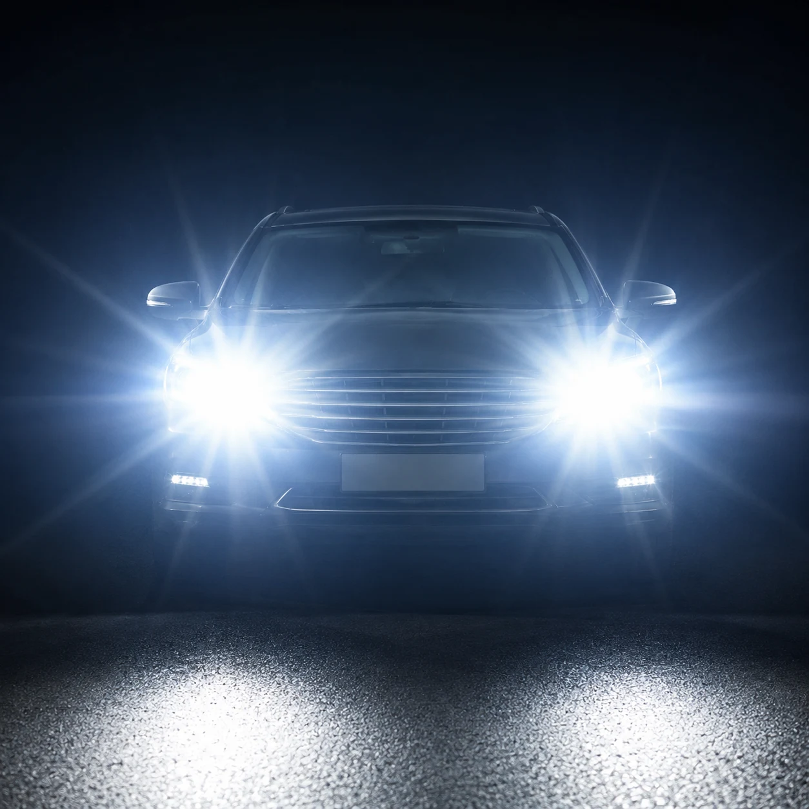

▲ 상향등은 전방을 멀리 비추지만, 마주 오는 운전자에게는 그만큼 강한 눈부심으로 다가온다
"저 앞에서 오는 차, 상향등 좀 꺼줬으면…" 야간 운전을 해본 사람이라면 누구나 한 번쯤 떠올렸을 생각입니다. 그런데 이 짧은 눈부심이 생각보다 훨씬 위험하다는 사실, 알고 계셨나요. 일본 경시청이 보행자 사망사고 625건을 분석한 자료에 따르면, 사고 당시 가해 차량의 전조등이 하향등 상태였던 경우가 597건으로 전체의 96%에 달했습니다. 반면 상향등 상태였던 경우는 단 9건에 그쳤습니다. 이유는 단순합니다. 시속 80km로 주행할 때 장애물을 인지할 수 있는 거리가 상향등은 평균 82m인 반면, 하향등은 단 5m에 불과했기 때문입니다. 그런데 왜 상향등을 함부로 켜면 안 된다고 하는 걸까요. 답은 '상대방'에게 있습니다. 내가 더 잘 보려고 켠 상향등이 마주 오는 운전자의 시야를 순간적으로 완전히 빼앗을 수 있기 때문입니다.
1. 잘 쓰면 생명을 구하고, 잘못 쓰면 사고를 만든다
상향등은 표시등 각도 자체가 위쪽을 향해 있어 일반 하향등보다 훨씬 먼 거리까지, 훨씬 넓은 범위를 비춥니다. 그만큼 상대 운전자의 눈에 직접 들어오는 빛의 양도 많아진다는 뜻입니다. "내가 잘 보이려고" 켠 상향등이 마주 오는 상대에게는 일시적인 실명에 가까운 상태를 만들 수 있는 이유입니다. 결국 상향등은 잘 쓰면 야간 사고를 줄이지만, 잘못 쓰면 오히려 사고를 유발하는 양날의 등화인 셈입니다.
2. 도로교통법이 정한 상향등 사용 규정
도로교통법 제37조 2항은 "서로 마주보고 진행하거나 앞차의 바로 뒤를 따라가는 경우에는 등화의 밝기를 줄이거나 잠시 등화를 끄는 등 필요한 조작을 하여야 한다"고 명시하고 있습니다. 즉 상향등 사용 자체가 불법인 것이 아니라, 마주 오는 차량이나 앞차가 있는데도 상향등을 그대로 켜 둔 채 눈부심을 유발하는 행위가 위반이라는 뜻입니다. 실제로 추월차로에서 정속 주행 중인 차량을 향해 상향등을 반복적으로 켜거나 경음기를 울리는 행위는 위협 운전으로 간주돼 더 무거운 처벌로 이어진 사례도 보도된 바 있습니다.
| 구분 | 내용 |
|---|---|
| 근거 법령 | 도로교통법 제37조 2항 |
| 범칙금(승용차) | 2만원 |
| 범칙금(이륜차) | 1만원 |
| 가중 처벌 | 위협 운전으로 인정되면 20만원 이하 벌금·구류·과료 |
3. 상황별로 보는 상향등 사용 가이드
상향등을 언제 켜고 꺼야 하는지는 상황만 놓고 보면 헷갈릴 것 없이 명확합니다. 아래 표로 정리했습니다.
| 상황 | 상향등 사용 여부 |
|---|---|
| 가로등 없는 국도·지방도, 인적 없는 한적한 구간 | 사용 권장 |
| 시야 확보 안 되는 커브·언덕 구간 | 사용 권장 |
| 마주 오는 차량의 불빛이 보이기 시작한 순간 | 즉시 하향 전환 |
| 앞차를 뒤따라가는 상황 | 즉시 하향 전환 |
| 가로등·신호등이 충분한 도심 시가지 | 사용 불필요 |
최근에는 앞차나 마주 오는 차량을 카메라 센서로 감지해 자동으로 상향등과 하향등을 전환해주는 '오토 하이빔' 기능을 갖춘 차량도 늘고 있습니다. 이런 기능이 있다면 평소에 꺼두지 말고 적극 활용하는 것도 눈부심 사고를 줄이는 실질적인 방법이 될 수 있습니다.
4. 결국 핵심은 '내가 아니라 상대의 시야'
상향등 에티켓의 핵심은 간단합니다. 나만 잘 보려고 켜는 등화가 아니라, 마주치는 모든 운전자의 시야를 함께 지키는 등화라는 인식입니다. 상향등을 켜야 할 때 주저 없이 켜고, 꺼야 할 순간에는 반사적으로 전환하는 습관만 들여도 야간 도로는 지금보다 훨씬 안전해질 수 있습니다.